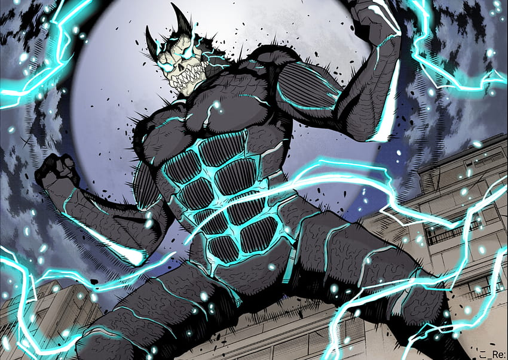

Kaiju No. 8
HIBINO KAFKA
He is a Defense Force officer and a former worker for the Professional Kaiju Cleaning Company Monster Sweeper Inc. who obtained the ability to turn himself into a humanoid Identified Kaiju after a kaiju managed to enter his body. He was formerly a member of the Third Division , but he was recently transferred to the First Division.